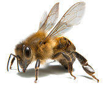

Who
We are the Beetles, Taco, Tomas, Niels, Gijs.
What
We are programmers, so we created an app that should create awareness for this bee situation and so is not the Game of Life, but the Game Of Hive!!
Inspired by UIKonf 2015.
App link.
Donation link.
Why.
Scientists have recently reported that mass extinctions of marine animals may soon be occurring at alarmingly rapid rates than previously projected due to pollution, rising water temperatures and loss of habitat. Many land species also face a similar fate for the same reasons. But perhaps the biggest foreboding danger of all facing humans is the loss of the global honeybee population.

The consequence of a dying bee population impacts man at the highest levels on our food chain, posing an enormously grave threat to human survival. Since no other single animal species plays a more significant role in producing the fruits and vegetables that we humans commonly take for granted yet require near daily to stay alive, the greatest modern scientist Albert Einstein once prophetically remarked, “Mankind will not survive the honeybees’ disappearance for more than five years.”